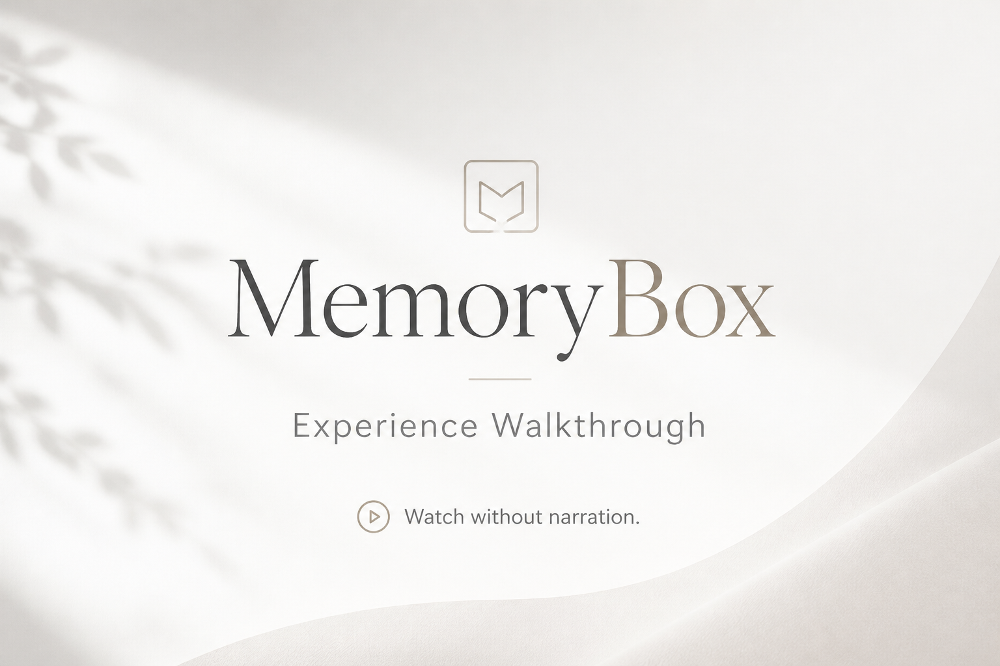

MB-FW-001 v2.0 · Optimize for user testing
Watch without narration. Every transition has a cause. The family is the star; the software stays quiet.
If you catch yourself thinking “I wish I could…” or “What if it also…”, say it out loud — that means the walkthrough is working.

—
—
—
—